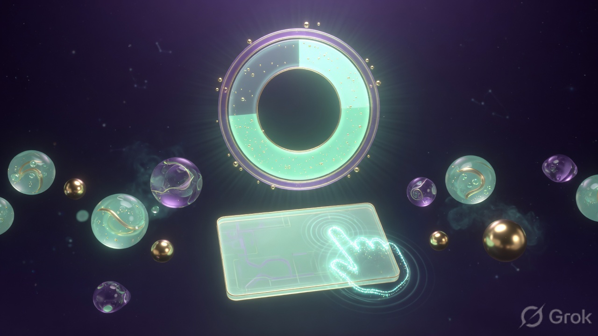

Homing
Hand leaves the pad, finds modifiers, returns. Classic KLM puts that trip at 0.4 seconds. You do it twice per transfer.
A Mac mini-app by Nitish Chauhan
You already highlighted the line. Dwell assumes that was the copy. You already moved to the field. A 1.5 second still-hold is the paste. Keys only show up when you want an older slot. Or never: open the stack with the pointer and stay on the pad the whole time.

The problem
Highlighting is already the decision. ⌘C and ⌘V are leftover logistics: home the hand, find two keys, home back, hope the clipboard is still what you think it is. That is not a shortcut. That is a tiny interruption you pay dozens of times a day until flow is sandpaper.
Hand leaves the pad, finds modifiers, returns. Classic KLM puts that trip at 0.4 seconds. You do it twice per transfer.
The M operator in KLM is ~1.35s: "now I copy." You already decided when you selected. The chord is a second decision.
Leroy (2009): part of you stays on the last unfinished move. A copy chord is a micro unfinished task inside reading.
Did it copy? Is the clipboard still that URL? You glance, you hesitate, you recopy. Residue, again.
The reflex
The selection lands on a stack. Identical re-select pops it. Tiny twitch-selects never enter. Password fields stay silent.
You were going to the other pane anyway. Live clipboard is already the latest kept item. Most pastes need no keys.
Still click-hold. If the pointer moves, it cancels. If you need slot 3, arm it from the stack or with Ctrl+Shift+3, then dwell the same way.
Live simulator
This is the product in your browser. Highlight in the source. Watch the stack. Click-hold 1.5 seconds on the drop pane. Click a stack chip (or Ctrl+Shift+1-9) to change what is live. Drag and the dwell dies.
Every knowledge worker already knows the twitch. A sentence is useful. The hand leaves the trackpad, two keys fire, the hand comes back, the eyes leave the paragraph to confirm the clipboard, then the whole ritual repeats at the destination.
Card, Moran and Newell priced that hand trip. They called it homing and gave it four tenths of a second. Field logs decades later still see a few hundred milliseconds. It is not the milliseconds that ruin you. It is the mode switch: reader becomes clerk, then reader again.
Sophie Leroy named the hangover attention residue. You do not fully arrive at the next sentence because a fragment of you is still holding the last chord. Gloria Mark's interruption work shows the stress of being yanked, even when you finish faster by sprinting.
Dwell's bet is rude and simple. Selection is the copy. A long still-hold is the paste. The clipboard is a stack you can see. Keys are how you arm an older slot, not how you perform the act. The pad never loses you.
Highlight this line if you want a clean demo payload. Then move right, and stay.
Click here and hold without moving. The ring fills. The live slot lands.
The science, used honestly
Dwell sits on three literatures: motor time (KLM + Fitts), attention residue, and dwell-selection in accessibility HCI. The 1.5s hold is a trial constant from the dwell-time range reported in gaze and touch work (often 150ms to 1500ms). We picked the slow end so the first version almost never false-fires.
| What you feel | What we are using | What we are not pretending |
|---|---|---|
| Hand jumping to ⌘C | KLM H operator, 0.4s; later field homing ~0.36s | That every paste is 0.4s faster. Dwell itself costs 1.5s. The win is skipped chords, skipped homing, skipped "did it copy?" |
| Flow that feels sanded down | Leroy 2009, attention residue after unfinished micro-tasks | That we measured your IQ dropping. Residue is the mechanism, not a trophy number. |
| Hold until it takes | Dwell-click in HCI: slow, low error, used when accuracy beats speed | That 1.5s is optimal. It is conservative. Later builds can learn your hold. |
| Ring filling, then a hit | Sense of agency work: predictable delayed action still feels owned if the state is visible | That a progress ring is dopamine science. It is feedback. The fun is the ritual becoming cheap. |
Sources worth opening: Card, Moran, Newell, The Psychology of Human-Computer Interaction (KLM); Fitts's law for pointing; Leroy, OBHDP 2009; Mark, Gudith, Klocke, CHI 2008 on interruption stress; dwell-time surveys in gaze HCI (typical windows 150-1500ms).
Why it can feel good
The stack chips are the ACK. You never wonder if the copy happened. Peripheral confirmation is how Limbic Notes treats capture. Dwell does the same for the system clipboard.
Most transfers are slot 1. Sometimes you want slot 4. Numbered arming, or pointing at the stack, is a tiny loot-select. Same paste gesture after.
Highlight the same line again and it leaves the stack. Accidents become a joke you can reverse without a settings panel.
1.5 seconds is long enough that you only do it when you mean paste. That is why it is the first trial. Fast later. Safe now.
Dwell is the first verb: move text without leaving the pad. The next verbs are not "more clipboard settings." They are a motor layer for the whole machine. The page stops here. The product does not.